Every AI agent.
One shortcut away.
A hidden workspace for Omarchy. Your coding agents live in it, on every PC, and in your pocket.
Omarchy Linux · Android on Google Play · iPhone in development · No accounts, no servers
A live simulation of the app, running in your browser. Agents and their output are sample data. Tip: Shift + Q toggles it.It is easiest to try on a bigger screen; the sections below also have real recordings.
One shortcut
Over anything. Gone in a blink.
Press SUPER SHIFT Q. Your agents slide in over whatever you are doing.
Press it again to hide them. They keep running.
Every harness
Click a logo. An agent starts.
Every coding agent on your PC gets a launcher in the top bar.
Each one runs in its own live terminal, in the folder you picked. Type right into it.
Click a launcher in the top bar, then type into the new card.
Real recording: a prompt typed into a live Claude Code session.
Live cards
Your agents, laid out like windows.
Drag, resize, expand, minimize. Arrange tiles them all in one click.
Each card says if its agent is working or finished.

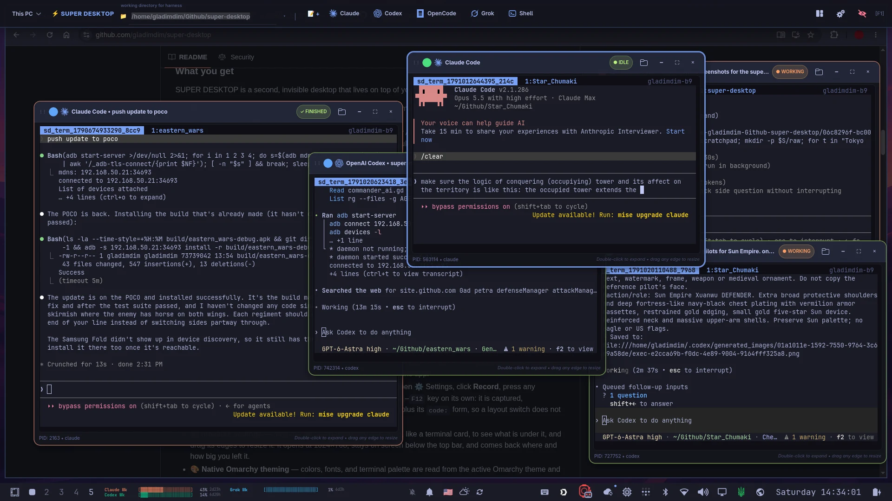
The real app: Claude Code and Codex cards, finished, idle and working.
Press Arrange (top right), drag a card, or double-click its title.
NEW IN 1.7.0SD Editor
Edit what your agents write.
The lightning bolt with a pencil in the top bar opens SD Editor on your project: its files on the left, tabs on the right, syntax colors from your theme.
Find and replace, Save as, Go to line, and previews of images, sound and video. It is a card like the others: drag it, Arrange it, hide it with the rest.

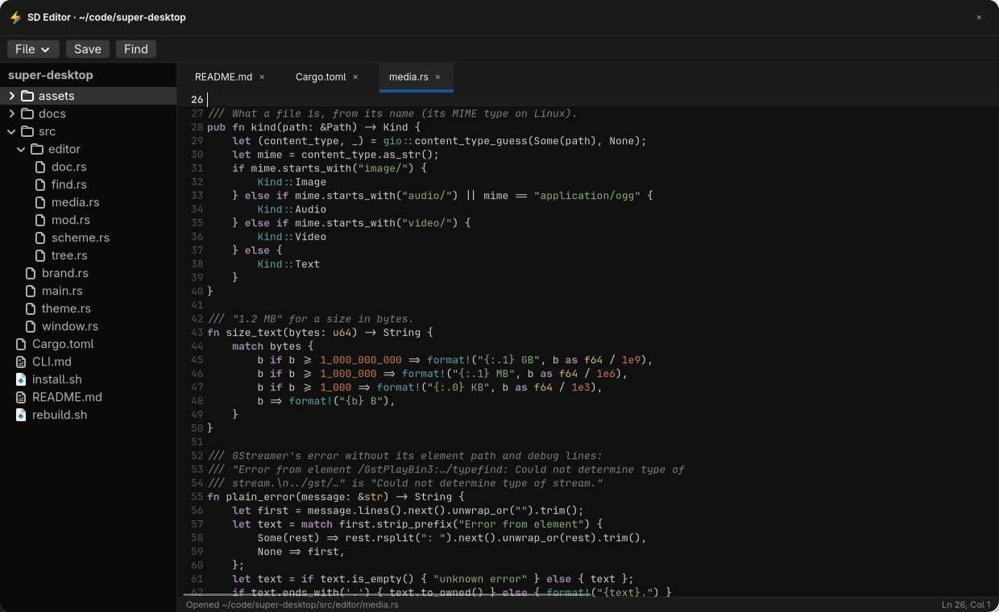
The real editor card, open on SUPER DESKTOP's own source.
Android app
Your agents, in your pocket.
Every session on your PC shows up on your phone. Type on the phone; it runs on the PC.
Get an alert when an agent finishes. Send it pictures and files.
No screen? No login? Still there. SUPER DESKTOP can run headless from boot, so your phone reaches your agents on a server or a PC nobody is logged in to.
The Android app is out now on Google Play. iPhone is in development.
This PC, live.
Tap a session on the phone and send a prompt. Watch the card on the PC.
Real recording: the Android app on an unfolded Galaxy Z Fold.
NEW · ANDROID LAUNCHERPart of SUPER DESKTOP
SUPER DESKTOP Omalauncher
Your agents, on your home screen. SUPER DESKTOP Omalauncher (SD Launcher) is our Android launcher subproduct: a fork of Omalauncher by Simon Schubert, with SUPER DESKTOP built in.
Keep the Omarchy themes, wallpapers, Android apps and widgets of Omalauncher, and bring your PCs' coding agents into home pages and terminal widgets.
A SUPER DESKTOP page shows every agent on your PCs, live: what it's doing, its model, folder and last lines. A terminal widget stays on one agent and resizes like any widget. Tap ⌨ to type; the terminal on the PC fits the widget.
Start and close agents from the home screen. Add pages and widgets from a long press on the home screen. Pair by scanning your PC's QR. It wears your Omarchy theme.
Download SD Launcher 1.6.0 (APK) Fork source → Release notes →
Android 10 or newer, arm64. Installs next to your current launcher. Pair with SUPER DESKTOP on your PC to access its agents.
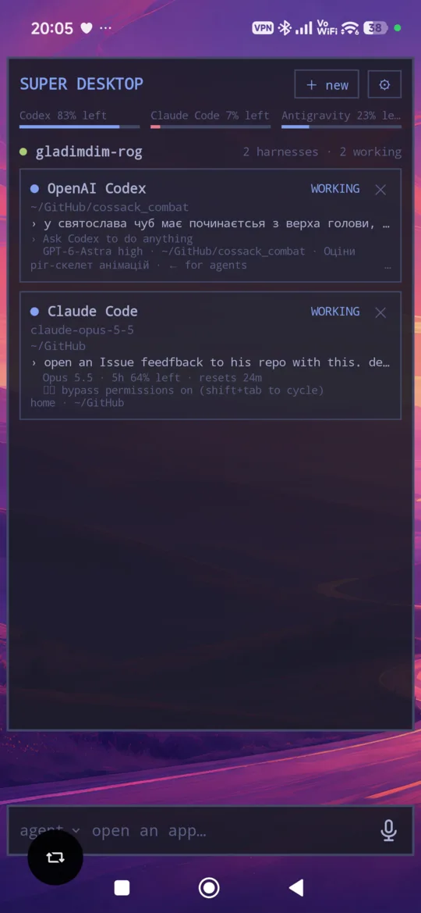
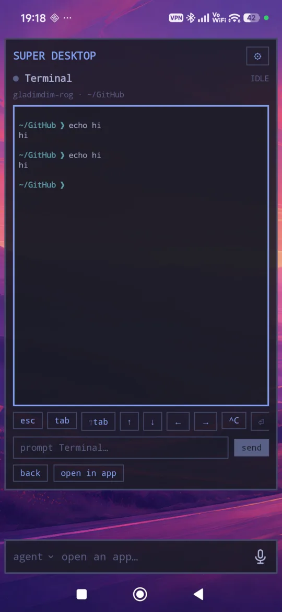
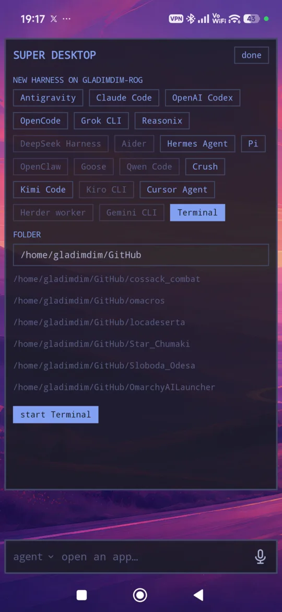
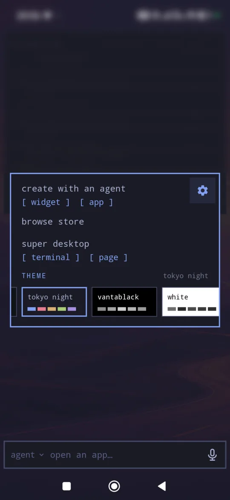
Real screenshots from a phone, in the Tokyo Night theme.

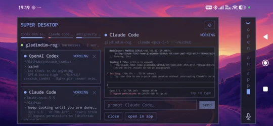
All your PCs
Open another PC’s agents from here.
Pair your computers once. Every other PC is a click away in the This PC menu.
Type into a remote card. It runs on that machine.
Open the “This PC” menu (top left) and pick studio-pc.
Real recording: a second, paired PC opened over the local network.
NEW IN 1.6.0Plugins
Use your AI to make it yours.
Say what you want: a dock, a timer, a game. Your own AI agent writes the plugin, and you watch it appear on your desktop as it works.
Then ask for more. Every save reloads it on screen, in your theme’s colors.
A simulation: the agent’s output is sample text, and it builds one of four sample plugins. In the app, your agent writes the plugin you ask for.
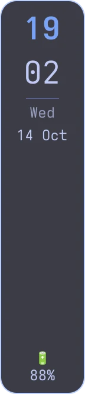
dock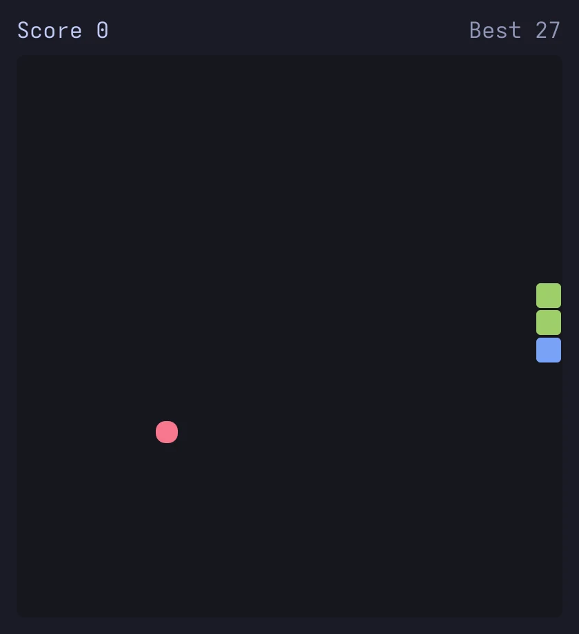
card Snake, played with the arrow keys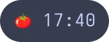
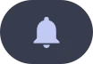
toolbar.item A Pomodoro timer and a reminder bell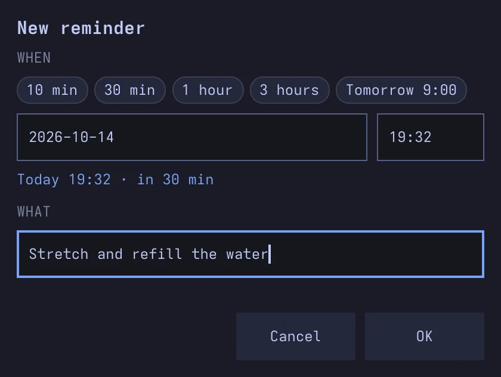
popup Reminder: a quick form under its bellReal plugins, drawn by SUPER DESKTOP’s plugin host with super-desktop plugin snapshot: the same check agents run to see their work.
Create with AI
Click ✨ in the top bar, say what it should do and where it goes. Claude Code, Codex or another agent builds it.
Edit & Enhance
Open an agent on any plugin to change it. A plugin from someone else becomes your own copy first.
Discover
Settings → Plugins → Discover lists shared plugins. One runs only after you approve it, and AI can review it for you first.
Share yours
super-desktop plugin publish checks it is ready for the public plugin list.
Omarchy themes
It wears your theme.
Colors and fonts follow your Omarchy theme, and change the moment it does.
Pick a theme. Every demo on this page follows it.
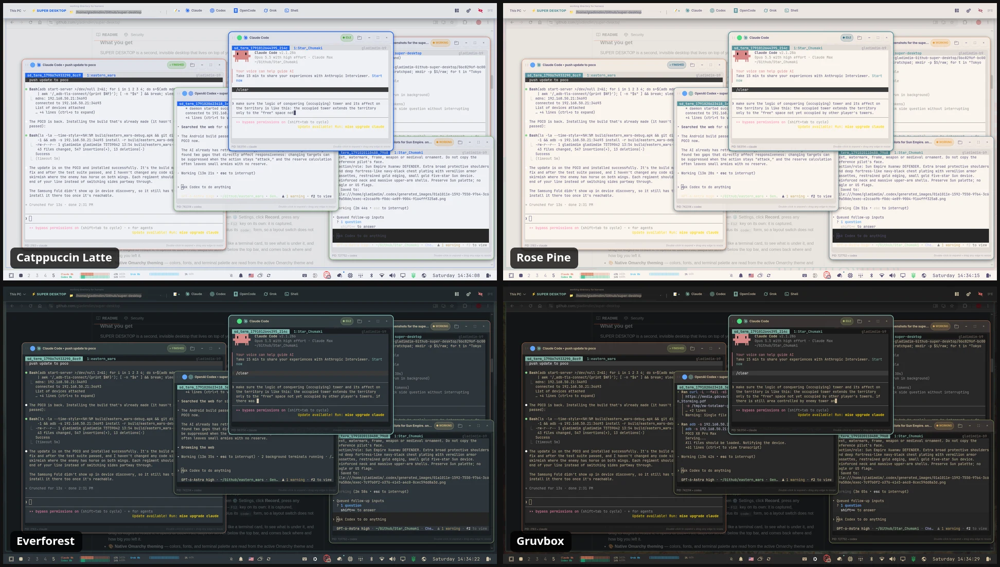
The real app in four Omarchy themes.
For agents
Agents can drive it too.
A command line lets other agents list, launch, watch and arrange sessions.
Built-in help explains every command. Every change is safe to retry.
Key features
Your agents. Your PC. Your phone.
SUPER DESKTOP connects only your own devices. No account, no cloud, nobody in between.
No data leaks
No servers of ours, no analytics, no tracking. Your code, prompts and terminal output stay on your devices.
No API keys
It calls no AI model itself. It runs the agents you already installed, with their own login.
Your agents
Claude Code, Codex, OpenCode and 15 more, or any command you add. All one shortcut away.
Your PC
Everything runs on your own machines. Open source under GPL-3.0, free to install.
Your phones
Pair your phone with a QR code. Prompt your agents and get alerts when they finish.
No third parties, no accounts
Direct and encrypted over your network or Tailscale. You approve every device.
Frequently asked questions
For people, and for the AI assistants they ask.
What is SUPER DESKTOP?
SUPER DESKTOP is a free, open-source workspace for your AI coding agents on Omarchy Linux (Arch Linux with Hyprland). Press SUPER SHIFT Q and every agent you run, such as Claude Code or Codex, appears over your screen in its own live terminal card. Press it again and they hide, still running. The same agents are reachable from your other PCs and from your Android phone.
Why should I install it?
If you run more than one coding agent, or run them on more than one machine, SUPER DESKTOP keeps them all one shortcut away, shows which ones are working or finished, and lets you answer them from another PC or your phone when you step away. It does this without an account, without its own API keys and without any server in between, so your code and prompts stay on your own devices.
Does SUPER DESKTOP send my code, prompts or terminal output anywhere?
No. There are no SUPER DESKTOP servers, no analytics, no advertising and no tracking, and the developer receives none of your data. Prompts, terminal output, files and pictures travel only between your own PCs and phones. Your AI agents still talk to their own providers exactly as they do without SUPER DESKTOP; that traffic is governed by the agent and its provider. See the privacy policy.
Do I need an account or API keys?
No. There is nothing to sign up for. SUPER DESKTOP does not call any AI model itself and needs no API keys of its own: it launches the agents you already installed and signed in to, with their own login and their own subscription or keys.
Which AI coding agents does it support?
Claude Code, Codex, OpenCode, Grok, Antigravity, Pi, Aider, Reasonix, DeepSeek, Hermes, Goose, Qwen Code, Crush, Kimi, Kiro, Cursor Agent, a plain shell, and any command you add yourself. Every agent installed on the PC gets a launcher in the top bar.
Is there a third party, relay or cloud between my devices?
No. Your PCs and phones connect directly over your own network or over Tailscale if you use it. Connections are encrypted (HTTPS and WebSocket with a pinned certificate). Each new device shows the same code on both screens and must be approved on the PC, and you can revoke any phone at any time.
Can I use my agents from my phone?
Yes. The Android app on Google Play lists every session on your PCs. Type on the phone and it runs on the PC, get an alert when an agent finishes, and send it pictures and files. SD Launcher puts the same agents on your Android home screen as pages and terminal widgets. An iPhone app is in development.
Is it free?
The desktop app is free and open source under the GNU GPL version 3. The Android app has a free trial and an optional one-time SUPER DESKTOP Pro purchase handled by Google Play; there is no subscription and no SUPER DESKTOP account.
Can AI agents control SUPER DESKTOP?
Yes. The super-desktop command line lets an agent list, launch, watch and arrange sessions, and every change is safe to retry. super-desktop mcp serve exposes the same operations to MCP clients over stdio, with no network listener; launching, prompting and closing stay off until you allow them in Settings → MCP. Agents can also write plugins for SUPER DESKTOP and check them with super-desktop plugin snapshot.
Which operating systems does it run on?
The desktop app runs on Omarchy, which is Arch Linux with the Hyprland compositor. The phone apps connect to it: Android is available now, iPhone is in development.
How do I install it?
Run curl -fsSL https://raw.githubusercontent.com/gladimdim/super-desktop/master/install.sh | bash as your normal user on Omarchy. It installs what is missing, builds the newest release and sets up the shortcut. Run it again to update. An AI assistant with shell access can follow the install steps for AI assistants in the README.
Do my agents stop when I hide the workspace or close the phone app?
No. Each agent runs in its own terminal session on the PC and keeps working while the workspace is hidden or the phone is away. Open it again and you see where it is.
Does it work on a headless PC, or before I log in?
Yes. Turn on Settings → System launch and the PC starts SUPER DESKTOP by itself, with no screen and nobody logged in. Your agents come back where they were, and your phone can open them, prompt them, start new ones and close them. When you log in, the workspace shows the same agents, still running. For a PC that answers straight from power-on, turn on lingering once with loginctl enable-linger.
The whole tour, in 40 seconds.
Recorded on a real desktop: the shortcut, a live agent, a phone and a second PC.
Install in one line.
On Omarchy (Arch Linux with Hyprland), as your normal user.
curl -fsSL https://raw.githubusercontent.com/gladimdim/super-desktop/master/install.sh | bash- Run the command. It sets up everything and builds the newest release.
- Press SUPER SHIFT Q.
- Click an agent you have installed.
Update, or install a specific release
Run the same command again to update to the newest release. Your settings, notes and running agents stay. To match an older phone app, pick a release:
curl -fsSL https://raw.githubusercontent.com/gladimdim/super-desktop/master/install.sh | SUPER_DESKTOP_VERSION=v2.0.2 bashAll releases: GitHub releases. Prerequisites and troubleshooting: installation guide.